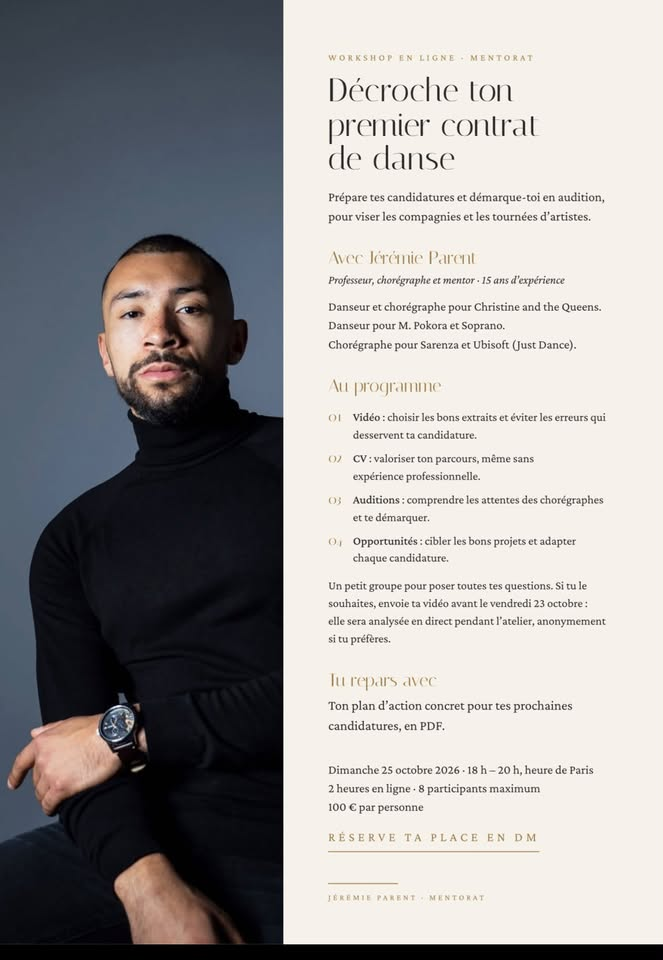

Île-de-France
ET BaM! Compagnie, session de novembre
hip-hop
Deuxième session d'audition pour la compagnie de la BaM School, participation gratuite. Une version Kids a lieu la veille, le 21 novembre.
Dim. 22 novembreÎle-de-FranceGratuit
Bourgogne-Franche-Comté
« Une vie sous les planches », comédie musicale
comédie musicaleamateur
La Cie La Minucia cherche trois acteurs-chanteurs pour une création originale. Auditions à Besançon et Lons-le-Saunier.
Semaine du 7 décembreBesançon / Lons-le-Saunier
Dossiers avant le 15 novembre
International
GöteborgsOperans Danskompani, saison 2027-28
contemporainclassiquepro
Dernier jour. La compagnie suédoise cherche des danseurs avec au moins trois ans d'expérience pro et un vrai goût pour l'improvisation. Candidature uniquement par le formulaire en ligne, audition sur invitation. Côté NDT 2, les candidatures sont closes depuis cette nuit.
Audition 20-21 février 2027Göteborg, Suède
Candidatures avant ce soir, 23h59 CET
The Royal Family Dance Crew, line-up 2027
commercialhip-hoppro
Le crew de Parris Goebel auditionne dans son studio d'Auckland, présence obligatoire les trois jours. Ouvert aux internationaux, mais le visa est à ta charge. Prépare un solo d'une minute.
27-29 novembreAuckland, Nouvelle-Zélande
En ligne
« Décroche ton premier contrat de danse », avec Jérémie Parent
tous stylespré-pro
Deux heures en visio pour préparer tes candidatures pros : choisir tes extraits vidéo, valoriser ton CV, comprendre ce qu'attendent les chorégraphes et viser les bons projets. Jérémie Parent a dansé pour Christine and the Queens et chorégraphie pour Just Dance. Huit places seulement, et un plan d'action en PDF à la clé.

🔍 Touche l’affiche pour l’agrandir
Dim. 25 octobre, 18h-20hEn visio100 € · 8 places
Vidéo à envoyer avant le 23 octobre (facultatif)
Nouvelle-Aquitaine
Mix Session Hip Hop chez Studio Attitude
hip-hoptous niveaux
Un après-midi 100 % hip-hop avec Lauriane, Choupi et Indies Rhino : trois intervenants, trois cours, pour préados, ados et adultes. Billetterie ouverte, les places partent vite.
Dim. 29 novembre, 13h30-18h30Bordeaux60 € les 3 cours
Occitanie
« Move ! », le stage d'automne du Centre James Carlès
contemporainjazzafrotous niveaux
Cinq jours avec Sylvia Waters (ex-directrice d'Ailey II), Géraldine Armstrong, Dorian Rollin, Angelo Monaco, Iman Brooks et Filipo Franzese (Cie Akram Khan), Benoit Tardieu en guest pour le lyrical jazz, et un focus afrodance avec Deewin de 17h30 à 19h. Les 24 et 25, Arthur Bouilliol remplace June Vivès.
24-28 octobreToulouse
Masterclass répertoire Alvin Ailey avec Sylvia Waters
contemporainjazz
Deux heures de répertoire Ailey dans le cadre du festival Danses et Continents Noirs #28. Places limitées.
Lun. 26 octobre, 13h30-15h30CCJC, Toulouse49 €
Bretagne
Mini-camp hip-hop avec le CCNRB
hip-hoptous niveaux
Cinq jours au Garage avec Liss Funk et Willow, et un battle pour finir le 25.
21-25 octobreRennes
Île-de-France
Stage d'automne Compagnie Poïesis
hip-hopcontemporaintous niveaux
Trois jours à Micadanses, avec une session hip-hop le vendredi.
21-23 octobreMicadanses, Paris7 à 70 €
LAX Studio : Kuba Walica, NOUVA et Gecko Treening
k-popversatile
Workshop de Kuba Walica le 21 octobre à 20h30, puis deux jours de workshops K-pop avec d'anciens idols et une soirée NOUVA au Bridge Paris Club le 29. Le 6 novembre, Jordan Boury lance son Gecko Treening : trois heures de training versatile, puis deux heures de collab avec Delphine Lemaître (55 €, places limitées).
21 oct., 28-29 oct., 6 nov.Paris
Partout
Stage national Passeurs de danse
contemporaintous niveaux
Trois journées autour du contact en danse, de 8h à 17h, entre technique et réflexion.
23-25 octobre
Nouvelle-Aquitaine
Université du mouvement, « Les 7 saisons »
contemporainamateur
Vingt et un danseurs amateurs confirmés reprennent des extraits des sept dernières créations de Gil Schamber, avec « The Writer » de Clara Billard en première partie. Dans le cadre du Mois de la danse des Landes.
Dim. 8 novembreSoustons (40)
Occitanie
Tremplin All Style Pro, Danses et Continents Noirs #28
all stylepro
Les candidatures sont closes, mais la soirée est ouverte au public : danse pro, musique, slam et performance sur la même scène.
Jeu. 29 octobre, 20hMAC Chapou, ToulouseEntrée libre
NEUFNEUF Festival, 17e édition
contemporain
La danse contemporaine dialogue avec le théâtre, la musique et la performance, à Toulouse, Tournefeuille et Martres-Tolosane. Création « VORTEX » de la Cie Trente Printemps le 7 novembre à l'Espace Roguet.
5-21 novembreToulouse et alentours6 à 18 €
Île-de-France
Ballet de l'Opéra de Paris : « Manon » et soirée trois pièces
classiquecontemporain
« Manon » de MacMillan reste à l'affiche jusqu'au 30 octobre. La soirée de trois pièces, dont deux entrent au répertoire, court jusqu'au 7 novembre.
Jusqu'au 30 oct. / 7 nov.Paris
Chaillot invite POUSH
Une soirée spéciale au Théâtre national de la Danse.
Mar. 20 octobreChaillot, Paris 16e
Bretagne
Festival TNB
contemporain
Une vingtaine de propositions entre danse, théâtre, opéra et création au Théâtre National de Bretagne. Le programme danse n'est pas encore détaillé.
11-22 novembreRennes
Hauts-de-France
« Murmuration Level 2 » et « Les 2010 », le même soir
hip-hopcontemporain
Au Colisée de Roubaix, Sadeck Berrabah mêle hip-hop, contemporain et arts martiaux (horaire à confirmer, 16h ou 20h selon les sources). À Lille, Sylvain Groud, directeur du Ballet du Nord, poursuit son travail sur l'adolescence à partir d'entretiens menés par Samira El Ayachi.
Sam. 28 novembreRoubaix / Lille, Le Grand Sud (20h)
Provence-Alpes-Côte d'Azur
Festival de Danse Cannes Côte d'Azur
Le grand rendez-vous danse de la Côte d'Azur, sur deux semaines au Palais des Festivals.
21 novembre-6 décembreCannes
Nouvelle-Aquitaine
BK 270 Battle
breakingtous niveaux
Breaking 3vs3 pour les moins de 16 ans, puis 2vs2 pour les plus de 16 ans, ouvert à tous. Au jury : Syssy, Tom et Nasty Nath. Davy Jones aux platines, El Pistolero au micro. Inscription sur place : la sélection démarre à 13h30.
Sam. 24 octobre, 13h30M.270, Floirac (33)3 € · gratuit -6 ans
Beat Street Day, battle break
breakingtous niveaux
Le rendez-vous breaking du Sud-Ouest, coorganisé par la Ville de Bayonne et Street Art Studio : élites françaises et internationales devant un jury de haut niveau. Le lieu n'est pas encore précisé (les dernières éditions se tenaient salle Lauga). Pour danser, contacte Street Art Studio.
Dim. 8 novembreBayonne (64)12 € · 8 € réduit
Battle Niort Event, 5e édition
hip-hoptous niveaux
La Cie E.go invite des danseurs hip-hop de toute l'Europe pour une soirée de performance et de partage.
Sam. 5 décembreLe Moulin du Roc, Niort (79)
France
Le Battle, par K.One
breakingtous niveaux
Le battle break annuel, avec DJ Taj, dans le festival Racine Choré(graphiée). Pass hip-hop à 13 € pour deux soirées.
Ven. 23 octobre, 20hSalle Mac Orlan, Brest5 à 7 €
5e Battle International d'Alès, 2vs2 all style
all stylebreakingpoppinghouselocking
Le battle de la Semaine internationale du hip-hop passe au 2vs2 tous styles, avec huit duos sélectionnés, de la house au popping en passant par le top rock et le new style. Toute la semaine, des ateliers gratuits, et une soirée DJ set le vendredi 23.
Sam. 24 octobre, 15hLe Cratère, Alès (30)12 € · 8 € réduit
Battle Kids Hip Hop, crew vs crew
breakinghip-hoptous niveaux
Un titre national kids, avec des crews de 8 à 10 danseurs venus de toute la France, pendant le Mois du hip-hop.
Dim. 1er novembre, 14h30L'Ombrière, Uzès (30)8 €
Urban Underground, battle international krump & hip-hop
krumphip-hoptous niveaux
Deuxième édition : une journée entière de battles krump et hip-hop aux Halles, et les champions de l'an dernier remettent leur titre en jeu.
Dim. 15 novembre, 12h-19hLa Place, Paris15 €
Battle hip-hop solidaire
hip-hoptous niveaux
Organisé avec l'association H2G au profit du Secours populaire. Inscriptions des danseurs sur place dès 13h, battles à 14h, billetterie en ligne à partir du 1er novembre.
Sam. 21 novembreMagny-les-Hameaux (78)
Championnats du monde Breaking & Hip-Hop Freestyle
breakinghip-hoppro
Trois jours de championnat du monde à l'Adidas Arena, porte de la Chapelle.
4-6 décembreParis
Hip Hop Games, la semaine des 15 ans
all stylehip-hoptous niveaux
Battle all style « Faut Pas S'Looper » au Flow le 11 décembre (majeurs, 5 €, jam de sélection à 19h), puis la finale internationale au Grand Sud le 12 et à l'Opéra de Lille le 13 à 16h.
11-13 décembreLille5 à 12 €
International
Red Bull Dance Your Style, finale mondiale
all stylepro
Le vainqueur de la finale française de Montpellier y représente la France.
Sam. 24 octobreZurich, Suisse
Red Bull BC One World Final
breakingpro
Le plus grand 1vs1 de breaking au monde, 23e édition, pour la première fois au Canada. À suivre en direct sur Red Bull TV, YouTube et TikTok.
Dim. 29 novembreMattamy Athletic Centre, Toronto
Angoulême
School Rag', saison 2026-27
Pas de stage annoncé pour la fin des vacances. Le plan le plus proche pour bouger : le BK 270 Battle à Floirac samedi, à une heure et demie de route. Côté Charente, l'in6dance Crew prépare un « Esprit Battle » kids spécial Halloween à Rouillac, date pas encore confirmée.
Bordeaux
Les Douvances, training libre du mardi
tous stylestous niveaux
Tous styles, playlist libre, DJ bienvenus. Le training ne tient que s'il y a un bénévole référent sur place : l'asso Fish & Shoes en cherche toujours.
Tous les mardis, 18h-21hHalle des DouvesAdhésion 10 € la saison
Poitiers
Chorinitia, après OSE
OSE a tiré sa révérence ce week-end. Chez Chorinitia, le planning de la saison tourne dans les nouveaux studios, pole dance comprise. Réservations dans l'appli du studio.
Nantes
Hip Hop Games Exhibition
hip-hop
Le battle-spectacle improvisé de Romuald « ROMSS » Brizolier : épreuves créatives, impros et un show qui n'est jamais le même. La date est annoncée complète, surveille la liste d'attente. Et au CCN de Nantes, Salia Sanou signe sa première saison complète : jette un œil à la programmation.
Ven. 27 novembre, 20h30Mixt, salle SuperComplet
Le Mans
Entraînement régulier du danseur, à l'INM
pro
Des séances le lundi à Coulaines pour garder le corps chaud entre deux projets, avec plusieurs dates en octobre et en novembre.
Le lundiCoulaines (72)
Ailleurs
Lille s'éveille en novembre et décembre (voir « À voir » et « Battles »). Rien de vérifiable pour l'instant à Limoges ou La Rochelle. Tu organises quelque chose ? Signale-le ici.